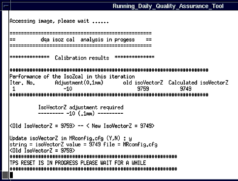

Illustration 5: Analysis Tool

The analysis tool will automatically set up scan parameters and will perform the scan. See Illustration 5.
Illustration 5: Analysis Tool
After the scan is complete the tool will automatically launch the analysis and display the results. See Illustration 6.
Illustration 6: Analysis Results
